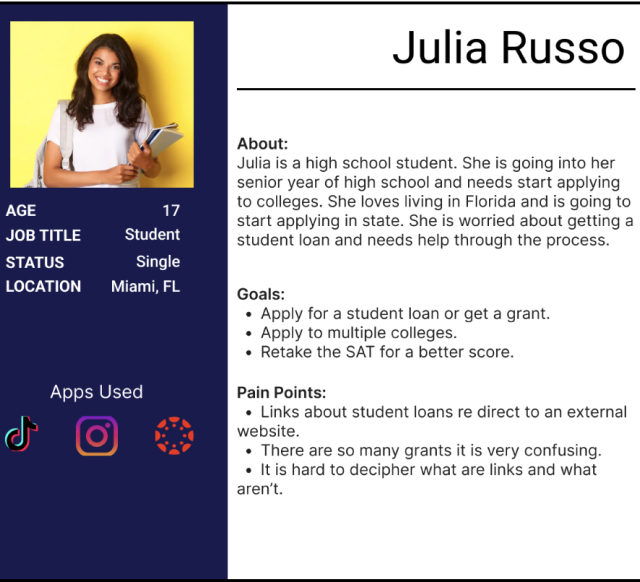

Project Overview
The US Department of Education’s website is used by students, teachers, and parents for a variety of reasons. The primary goal of this redesign was to make the website easier to navigation with a clean and clear design.
Role
UI Designer, UX Researcher, and Project Manager
Team Size: 4
Tools Used
We researched what about the website needed to be changed or edited through user testing. We also did research on the colors and what people's end goal is when using this website. We found out that most people avoid the website because of clutter and have a hard time finding what they need since most of the links are dead ends. After researching what needed to be changed, we moved onto annotating the website to get a better understanding of what is important to keep and what we can get rid of. Also, I started thinking about how different headings can be organized.
Problem Statement: Julia Russo is a high school senior and is going to college next year. She doesn’t know how she is going to pay for her education and needs to figure out how to get a grant through the Department of Education website.
